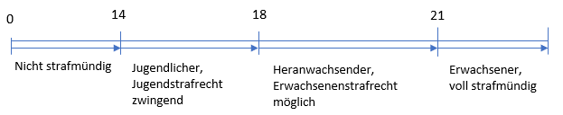
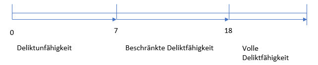

Straf- und Deliktfähigkeit
Strafmündigkeit
Strafmündigkeit bedeutet, dass dem Menschen vom Gesetzgeber her zugetraut wird, dass er die Folgen seiner Handlung bewusst überblicken kann und die Verantwortung dafür trägt.
Strafmündigkeit laut des Strafgesetzbuches (StGB)
§ 19 Schuldunfähigkeit eines Kindes:
Schuldunfähig ist, wer bei Begehung der Tat noch nicht 14 Jahre alt ist.
Strafmündigkeit laut dem Jugendgerichtsgesetzes (JGG):
§ 1 persönlicher und sachlicher Anwendungsbereich:
(1) Dieses Gesetz gilt, wenn ein Jugendlicher oder Heranwachsender eine Verfehlung begeht, die nach den allgemeinen Vorschriften mit Strafe bedroht ist.
(2) Jugendlicher ist, wer zur Zeit der Tat 14, aber noch nicht 18, Heranwachsender, wer zur Zeit der Tat 18, aber noch nicht 21 Jahre alt ist.
§ 3 Verantwortlichkeit
Ein Jugendlicher ist strafrechtlich verantwortlich, wenn er zur Zeit der Tat nach seiner sittlichen und geistigen Entwicklung reif genug ist, das Unrecht der Tat einzusehen und nach dieser Einsicht zu handeln.
Zur Erziehung eines Jugendlichen, der mangels Reife strafrechtlich nicht verantwortlich ist, kann der Richter dieselben Maßnahmen anordnen wie das Familiengericht.
Allgemein lässt sich sagen:

Deliktfähigkeit
Deliktfähigkeit bedeutet die Fähigkeit, unerlaubte Handlungen mit Verantwortlichkeit für deren Folgen zu übernehmen.
Deliktunfähig sind Kinder bis zum Alter von sieben Jahren. Das bedeutet für die Eltern, dass sie für ihre Kinder haften, das heißt sie leisten Schadensersatz, sofern sie die Aufsichtspflicht verletzt haben.
Von sieben bis 18 gilt die beschränkte Deliktsfähigkeit. Hier muss ein Richter entscheiden, ob der Beschuldigte eine Einsicht in das Unrecht seiner Handlungsweise zeigt oder nicht. Falls, dies der Fall ist, hat das Kind oder der Jugendliche eine Schadensersatzpflicht. Falls keine Einsicht besteht, haften die Eltern, aber nur, wenn sie die Aufsichtspflicht verletzt haben.
Ab dem Alter von 18 Jahren ist man vollständig deliktfähig. Das bedeutet, dass der Angerichtete den Schaden voll ersetzen muss.

Unterschied zwischen Strafmündigkeit und Deliktfähigkeit
Die Strafmündigkeit gibt an, ob jemand schuldfähig oder schuldunfähig ist. Die Deliktfähigkeit hingegen ist eine zivilrechtliche Regelung. Sie gibt an, ob eine Person schadensersatzpflichtig ist. Eine strafrechtliche Regelung ist hingegen die Strafmündigkeit.